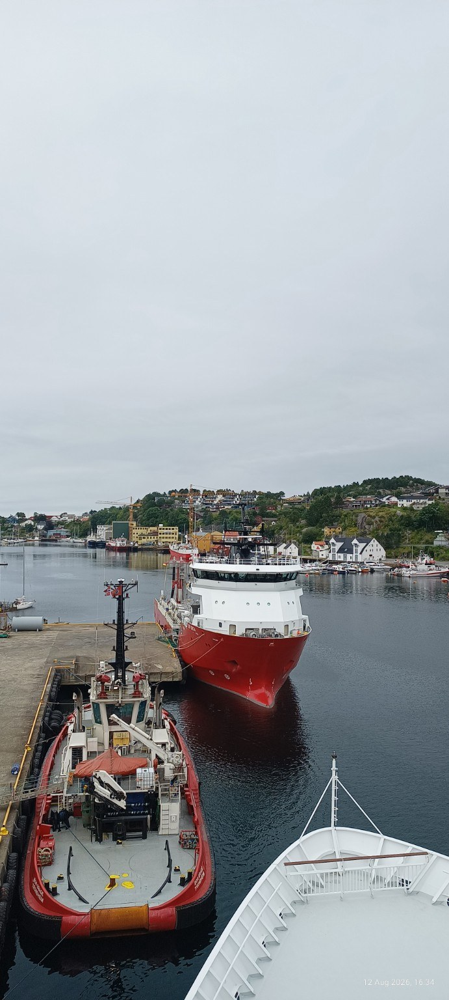
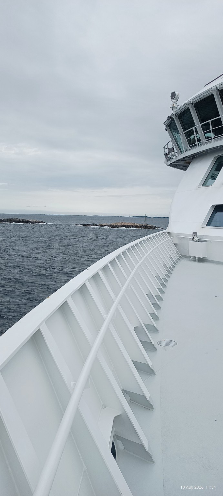
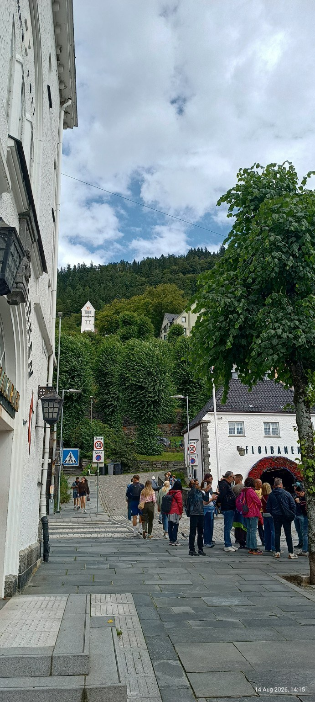

Zwischen
Abendlicht und
letztem Zug
Eine Sammlung für lange Fensterblicke und kurze Umwege.
Notizen aus dem Dazwischen
Musik, Bücher, Bilder und Wege – gesammelt ohne Eile.
EntdeckenEine Sammlung für lange Fensterblicke und kurze Umwege.
02 — Bücher & Kultur
01
Lektüre
Platz für Bücher, Sätze und Randnotizen, die einen nicht loslassen.
02
Auf dem Zettel
Ein persönliches Archiv dessen, was gesehen, gehört und mitgenommen wurde.
03 — Fotografie
Beobachtungen in Farbe, Körnung und Momenten.



04 — Orte/Reisen
Sechs Fotografien aus Bergen und von der Reise auf See – Straßen, Hafen und ein paar stille Augenblicke im August.
Norwegen ansehen05 — Über
Hier entsteht ein ruhiger Ort für Entdeckungen: von Platten und Seiten, von Bildern und Reisen. Unfertig, neugierig und immer in Bewegung.
Hallo sagen